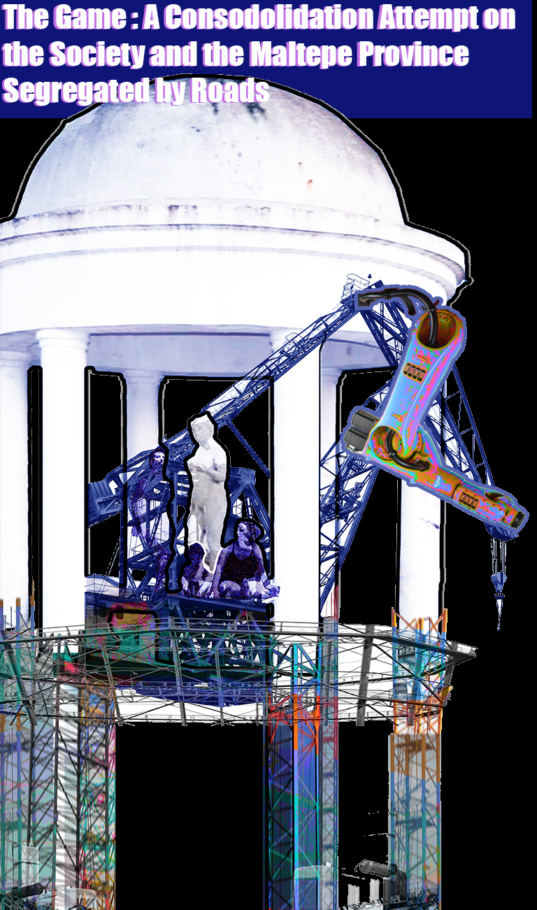
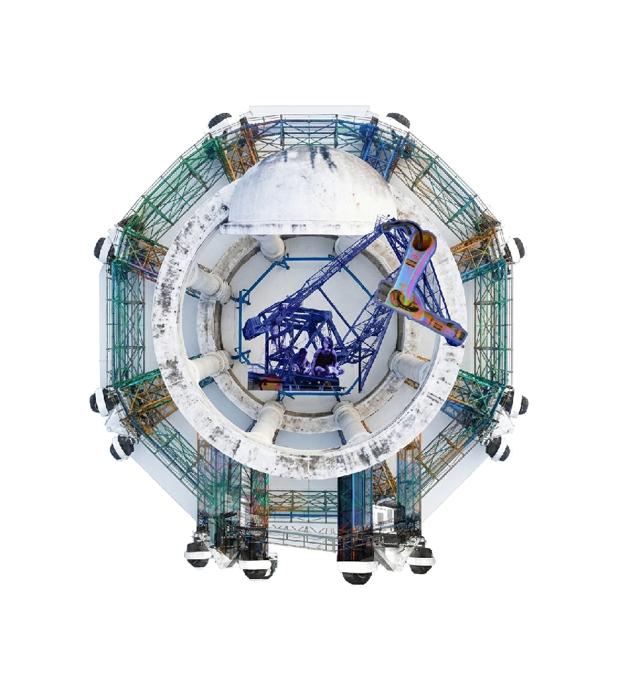
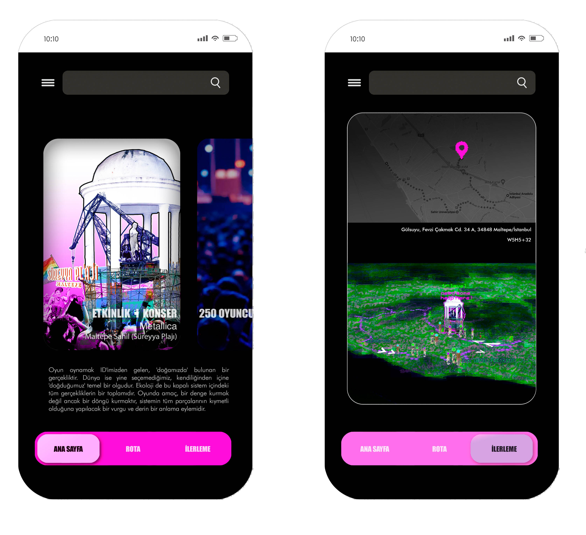
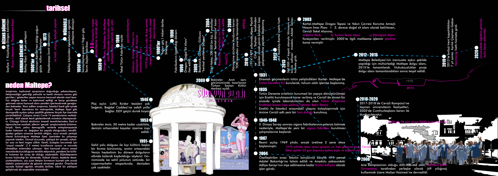
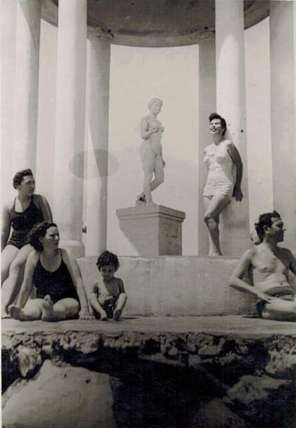
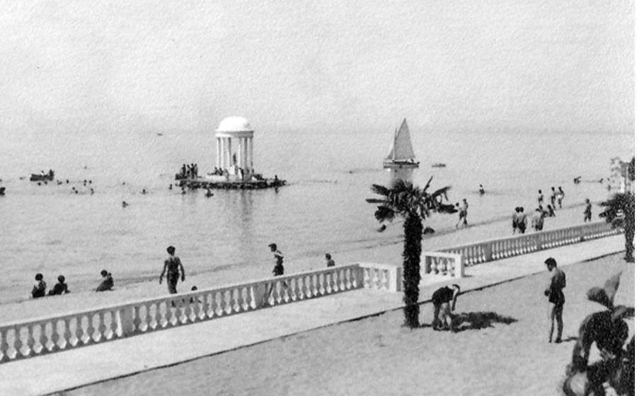

Anti-Monument
Maltepe, Istanbul, Turkey.

A city can be defined as a spatially configured social phenomenon (Simmel) that thrives through democratic participation (Weber) and forms a complex urban ecosystem through its specialized components (Park)—ultimately serving as the potential birthplace for new modes of production (Harvey). While the widespread indifference (Simmel) characteristic of dense, fast-paced metropolitan interaction creates spaces of relative freedom, the urban individual simultaneously faces alienation (Ergun) and intensifying loneliness (Wirth), further exacerbated by radical political polarization. Concurrently, rapid urbanization often diverges from the civic duties it demands, resulting in a trajectory of swift quantitative expansion paired with qualitative decline.
Focusing on the Maltepe district in Istanbul, this study evaluates public space, urbanization, social segregation, and democracy through an integrative ecological lens. To address these interconnected challenges, a game framework is proposed as an interactive medium for awareness and social cohesion. By nature, play is autonomous, self-contained, and participatory—establishing its own ecosystem and reality. Operating beyond ordinary life without an inherent moral mandate (Huizinga), this state of "play" possesses the unique capacity to unite polarized social groups.
The proposed urban game centers around a symbolic site and route: the Virgin’s Monument (Bakireler Anıtı), functioning as an anti-monument. Beginning at the monument's current location, the narrative route traverses key urban nodes—including the former Tekel Tobacco Factory, the Anatolian Courthouse, Gülsuyu District, Başıbüyük Sites, Küçükyalı Metro, and the Çınar Mahallesi Archeopark—before returning the monument to its original site to complete the cycle. Rather than striving for static equilibrium, the project establishes a continuous loop that emphasizes the intrinsic value of every urban component and fosters a deeper, collective understanding of the city.



Istanbul has undoubtedly been an important ‘city’ throughout history, hosting people of many colors, languages, and identities; it is an infinite source of inspiration, a timeless center of attraction, and a heterogeneous, fairytale-like collage. The phenomenon of the city has led people from many disciplines to understand and make sense of it, as well as to reflect upon social and spatial organizations. Australian sociologist Peter Saunders fell into a confusion regarding what the quantitative and qualitative characteristics of a settlement should be for it to be considered a city, pointing out that a place accepted as a small town in one context could hold the status of a city in another (2005). Emphasizing that the issue is not merely size or space, Özdemir states that Saunders points to the importance of social processes when defining the city (2010). In the process of understanding the city, Weber draws attention to citizen participation, economy, politics, and security (1958). Simmel, one of the most important sociologists of the 20th century, talks about the speed and intensity of the metropolis and discusses the emergence of a new definition of the 'individual'—this individual is the 'urbanite'. The city is not a phenomenon with sociological outcomes, but rather the sociological outcome of spatial organization (1950). Park defines the city as a mosaic. Each specialized piece (natural areas) evolves from one relationship to another, forming the urban ecology (1950). The city is neither solely a spatial element nor is it related to society alone. It has an intricate, multi-layered, and dynamic structure.
It is often mentioned that an architect who produces for society needs to break away from this intertwined network of relationships, bring a 'view from above', and remain neutral. How successfully someone who has naturally grown up within this network of relationships can achieve this is a matter of debate. If achieved, how 'objective' their approach can be constitutes another point of discussion. Moral norms vary according to society, culture, the individual—that is, the context. Within professional ethics, an architect who believes they are acting neutrally might sign off on a design that causes social destruction or commit an 'urban crime'. For instance, in urban transformation projects carried out 'for the public good' in Turkey, we witness a stance being taken in favor of certain segments of the public. Within the framework of the contribution made to the process by an architect who performs their job neutrally and well in these projects, is it possible to speak of 'professional ethics'? It might be beneficial to attach a condition to the principle of neutrality or to redefine it. Respecting universal human rights and limited natural resources is an approach expected universally from every professional group. If we cannot claim that taking a stance against global capital is avoided through this definition, it becomes inevitable to conclude that the principle of neutrality is a flawed definition.
It is clear that what we call scientific data does not represent 'absolute truth'. It is possible to say that positivist approaches advocating objectivity stumble, especially when the subject in the research is human and the object in the subject under study is also human. "According to Frankfurt School philosophers, critical theory requires more than the limited resources of Enlightenment science or the one-sided rationality of positivism; it is for this reason that art, utopian thought, fantasy, and imagination are needed—in other words, to bring to light the suppressed powers of human beings and the potentials neglected by the existing social order." (Cevizci, 2009). In the conducted research, city and human are treated as an inherent issue that continuously affects and transforms one another. Approaches that objectify, set aside all the complexity of the subject, and reduce the issue to pure data and numbers will fall short and miss the intended outcome. Understanding the city within the context of the dialectical relationship it establishes with humans ceases to be a purely quantitative matter. In this case, the role to be assumed by the researcher or designer should not be divine but human, and they should not detach themselves from their own reality; however, they should rid themselves of prejudices, touch as many people as they can contact, carry out understanding processes with absolute honesty and continuous questioning, and strive for the design/research product to be in a form that dictates as little as possible. According to critical theorist Max Horkheimer, the criticality of a theory is only to the extent that it liberates people (1982).
The concepts chosen for defining the problem in the research—city-urbanization-urbanism (Ergun, 2011), alienation as the outcome of social segregation (Ergun, 1973), and the public space (which is the most 'free' manifestation of all these concepts in the city) becoming unqualified and playing a role in polarization—have been gathered under the headings of ecology-ecological crisis with a holistic perspective. At the point of producing a solution to the problem, the necessity arose to select a function that would undertake a mission of "raising awareness," and the mentioned concepts were configured as location selection and design inputs within the scope of design research. The city's participatory, interactive, multicultural, flexible, and liberating structure; the indifferent, polarized, objectified character and attitude developed by the urbanite due to their frequent, short, and unqualified relationships with one another despite their ever-increasing numbers (Wirth, 1938); and the fact that this relationship finds its place most clearly again in the public space have determined the location selection, the target audience, the mission, and the conceptual background of the game to be designed.
Istanbul is a mosaic of Turkey; it harbors mini-cities within itself and is like a human kaleidoscope (Park, 1915). In this context, it is not surprising that Istanbul was chosen as the location for the proposed game. Among the urban islets, Maltepe was selected; although this research could be conducted in many neighborhoods specific to Istanbul, a personal preference was made due to it coinciding with a period when actively experiencing the city was not possible (COVID-19 Pandemic). Park advises his students to get their hands dirty with 'real' research (Lofland, 1971).
Prior to the historical analyses of Maltepe, the opportunity was caught to be present, understand, and analyze in real-time space, experiencing the vertical axis of Başıbüyük (gated communities) - D-100 highway (neighborhood culture living among skyscrapers) - minibus road (settled culture) and the coastal road (public green). When supported by historical analyses, it was deemed appropriate to read the social and spatial segregation specifically in Maltepe through roads. While making these readings and analyses, benefiting from satellite reality is inevitable but will remain insufficient. By superimposing personal mappings and sketches onto satellite reality, the aim was to develop an approach that can be reconfigured every time, does not dictate, and does not reduce the dynamic structure of the city solely to numerical data. Just as demographic data was utilized, personal city stories of individuals were also added to the urban readings. Benefiting from quantitative and qualitative data is a conscious decision, aiming to reveal "more than the limited resources of one-sided rationality" (Cevizci, 2009). It can be said that this is a research process striving to transcend the hermeneutic boundaries of positivism (Yaltıraklı, 2015) and drawing closer to the constructivist epistemological tradition.
The digitalizing human, today's reality, is among the topics that must be mentioned when drawing a framework regarding society. Virtual platforms generating new public spaces have brought along the need to redefine the public space. This situation, already being experienced, became even more pronounced under pandemic conditions, where technological devices at times became the sole source of communication. As mentioned in the article by Dönmez and Dikkol: "Robert Geraci (2010, p. 72) suggests that the distinction between virtual and real, physical and non-physical, game and real has become increasingly blurred, and the social effects of this situation need to be examined. For virtual worlds now constitute a part of mainstream culture. Thus, there is a flow toward a more mind-based world compared to the pre-digital technology period, or in other words, the pre-ENIAC era. Considering the difficulties experienced by individuals—who interpret data received from the physical world to make sense of it in their own mental world—in understanding and adapting to the hyperreal (Baudrillard, 2011) (...)" (2020), it was conceived that the design proposal "game" should catch up with today's requirements by developing a hybrid approach and evaluating the potentials of the digital environment, while simultaneously executing it by creating embodied environments that can be experienced at the same time.
Free thought holds the potential to nourish democracy provided it is protected and finds a place for itself in the public sphere. For this reason, the public space hosts different encounters, clashes, discussions, and conflicts, forming one of the building blocks of democracy. As Yıldırım indicates, the public in Turkey evokes the state, and the representation of Lefebvre’s abstract space, public spaces, are crushed under the authority of political power and cannot be lived freely (2015). Producing multi-voiced spaces that do not reject diversity and contain every color within themselves was defined as the ultimate goal; first and foremost, the necessity emerged to produce catalyst spaces and functions that would ensure social peace and to go into a rehabilitation process. Considering the fact that free thought is under threat, selecting a topic that has its own independent reality and is 'other' than today's reality became inevitable. As a rehabilitator/catalyst, play/game was chosen as an interactive and unifying function. The space of the game should also be constructed with a similarly egalitarian and interactive approach; in fact, the game itself should be established as it is played and belong entirely to the urbanite and the city. As Huizinga conceptualizes in his book Homo Ludens: "Play is older than culture. Even if we narrow down the concept of culture, it requires the existence of a human society in any case; however, animals did not wait for humans to arrive to learn how to play. As play itself, it completely transcends the boundaries of biological or physical activity. Play is a function rich in meaning; an independent element 'plays' that exceeds the direct needs of life and adds meaning to action. Saying that play is not serious or that it is frivolous is not based on solid ground. Although play produces a mental activity, it carries no moral function; it contains neither virtue nor sin. The customs and rules of daily life have no value within the playing field. An action that is felt to take place 'outside ordinary life', 'free' and 'fictional', yet capable of absorbing the player completely. Play is an action stripped of all material interest and benefit. Play is a voluntary action or activity carried out within certain boundaries of time and space according to strictly binding but freely accepted rules, having its aim in itself, accompanied by a feeling of tension and joy and the consciousness of being 'different' from ordinary life." (1951).
For the urban game to be designed, an "image" was primarily selected, striving for this image to have an egalitarian and unifying effect for the local people and for Istanbulites on a historical axis. The Virgin’s Monument (Bakireler Anıtı), located at the (old) Süreyya Beach in Maltepe—formerly on the sea, now standing idle in the parking lot of a supermarket—was deemed suitable for this task. The monument served as an anti-monument even during the period it was on the sea and is a symbol with strong ties to society. It was planned that the sculpture, whose place in urban memory is fading into oblivion and which has long lost the coastal culture it belonged to, be displaced from its current unfitting location, made mobile by supporting it with steel legs, and travel along a route determined in Maltepe. The ultimate goal of the game is to complete the cycle and bring the Monument back to where it belongs, to the sea. The urban game aims to bring a holistic perspective wherever it goes. It is designed to construct the game within the context of the 'ecological crisis' it addresses, to transform unqualified public space into qualified space, and to do so by introducing alienated segments of society to one another and inviting them into their own reality. The route of the game is sequentially: The Virgin’s Monument, the old TEKEL Factory, Anatolian Palace of Justice, Gülsuyu, Başıbüyük Estates, Küçükyalı Metro, Çınar Neighborhood Archeopark, and The Virgin’s Monument-Coastline. [Resim 2,3] Three criteria played a role in location selection: public spaces lacking diversity, places where diversity is already high—which will multiply potential encounters—and historical stops etched in memory. In the position of research through design, producing a prototype and incorporating the outputs of the design into the study is a topic considered for later stages. To sum up; if playing a game is a reality coming from our ID (Freud) and existing in our 'nature', the World is likewise a fundamental phenomenon into which we are 'born' by default, without choice. Ecology is also the sum of all realities within this closed system; it tends to be orderly at any moment and intends to establish balance. In the proposed urban game, the goal is not to establish a balance, but to establish a cycle—a deep act of understanding and an emphasis that all parts of the system are valuable.


Baudrillard, J. (2011). Simülakrlar ve simülasyon. (O. Adanır, Çev.) Ankara: Doğubatı Yayınları.
Cevizci, A. (2009). Felsefe Tarihi (s. 1204)
Dönmez, S. & Dikkol, S. (2020), “Dijital Gerçeklik ve İnsan Sonrası Düşünce Bağlamında Facebook Horizon Uygulaması”, s. 756, Araştırma Makalesi Mersin Üniversitesi
Ergun, C. (2011), Kentsel Dönüşüm Sürecine Dönüşüm Alanlarından Bakmak: İstanbul Maltepe (Başıbüyük ve Gülsuyu Mahallesi Örneği, S.D.Ü. Doktora Tezi
Ergun, D. (1973), Sosyoloji ve Tarih: Sosyolojide Yöntem Sorunu, Yar Yayınları, İstanbul
Geraci, R. (2010). Apocalyptic ai. New York: Oxford University Press.
Horkheimer, M. (1982), Critical Theory, New York: Seabury Press.
Huizinga, J. (1951). Homo Ludens: Oyunun Toplumsal İşlevi Üzerine Bir Deneme. (7.Basım, ss.17-53) İstanbul, Türkiye: Ayrıntı Yayınları.
Lofland, L. H., (1971), Analyzing Social Settings, Belmont: Wadsworth.
Özdemir, E. (2010). Kentin Tanımlanmasında Sosyolojik Yaklaşımlar: Toplumsal Süreç ve/veya Mekânın Çözümlenmesi, (ss. 50-56)
Park, R. E., (1915), The City: Suggestions for the Investigation of Human Behavior in the City Environment, The American Journal of Sociology, vol. 20, 5, 577-612.
Park, R. E., (1950), Human Communities, Glencoe: The Free Press.
Rasyonel Videolar (2015, Mart 21) Pozitivizmin Hermeneutik Sınırları. Ufuk Yaltıraklı [Video dosyası].
https://www.youtube.com/watch?v=4BstggpPjas&t74s&ab_channel=RasyonelVideolar
Saunders, P., (2005), Social Theory and Urban Question, London and New York:
Routledge.
Simmel, G., (1950), The Metropolis and Mental Life, In K. H. Wolff (Ed.), The Sociology of Georg Simmel, Illinois: The Free Press.
Yıldırım, B. (2015). Türkiye’de Devlet ve Kamusal Alan Üzerine, Mimarlık Dergisi, 382.
Weber, M., (1958), The City, Illinois: Glencoe Free Press.
Wirth, L., (2000), Urbanism as a Way of Life, In R. T. LeGates & F. Stout (Ed.), The City Reader, (97-105), London and New York: Routledge.